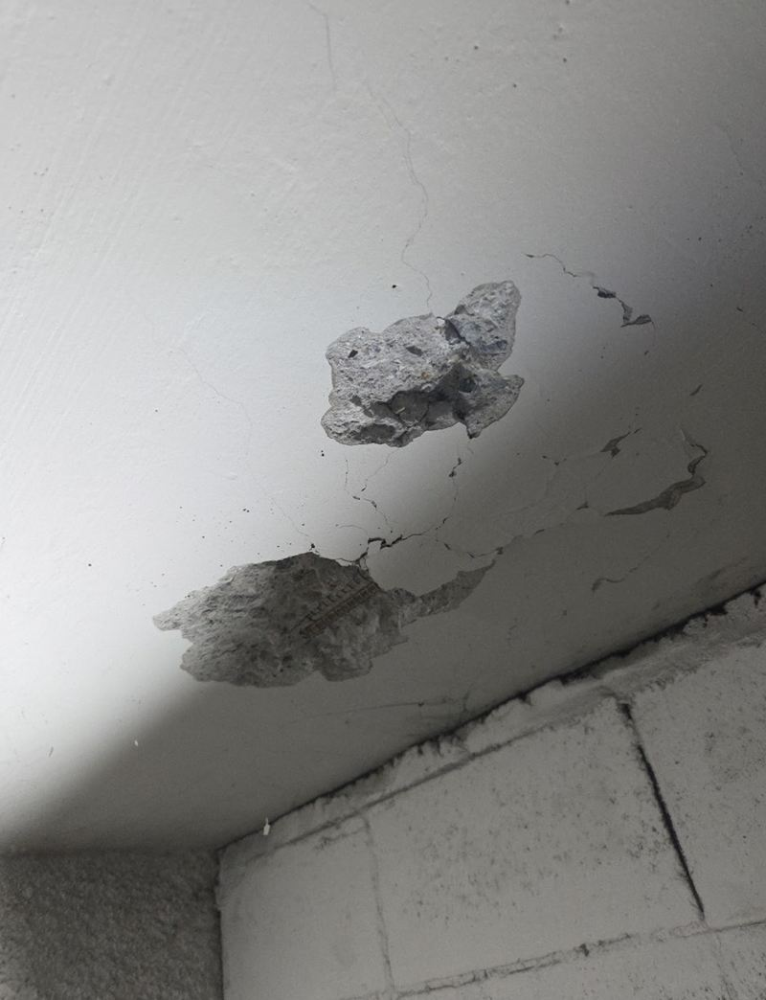
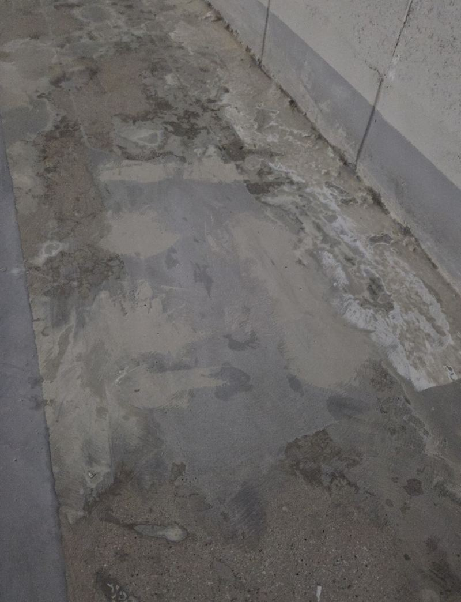
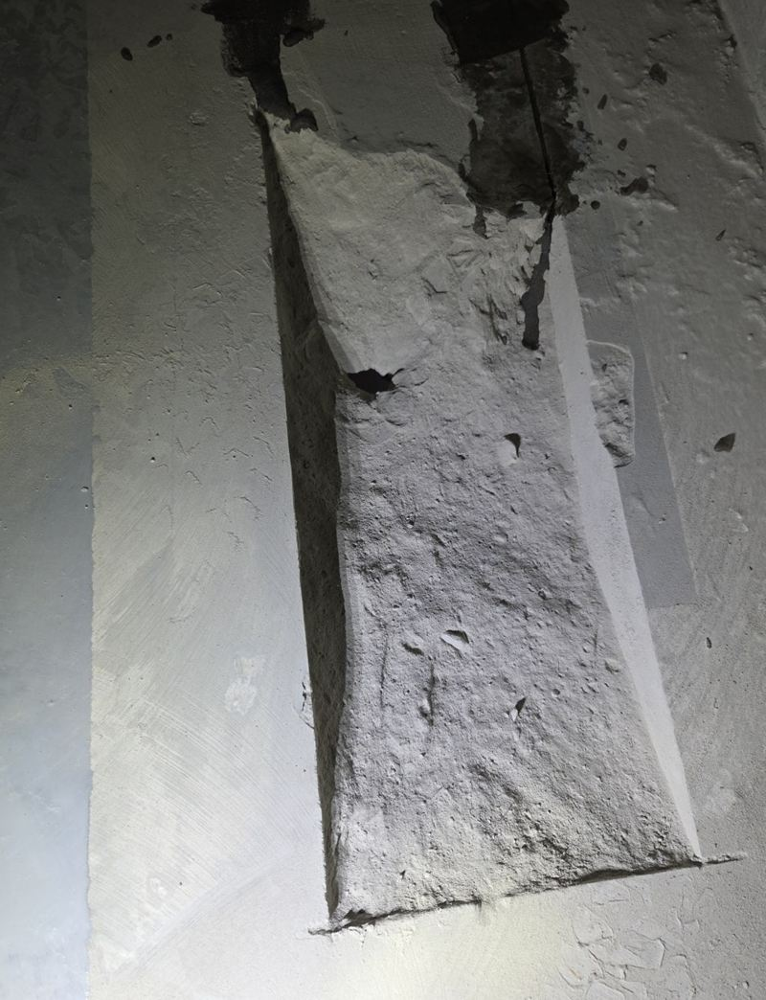
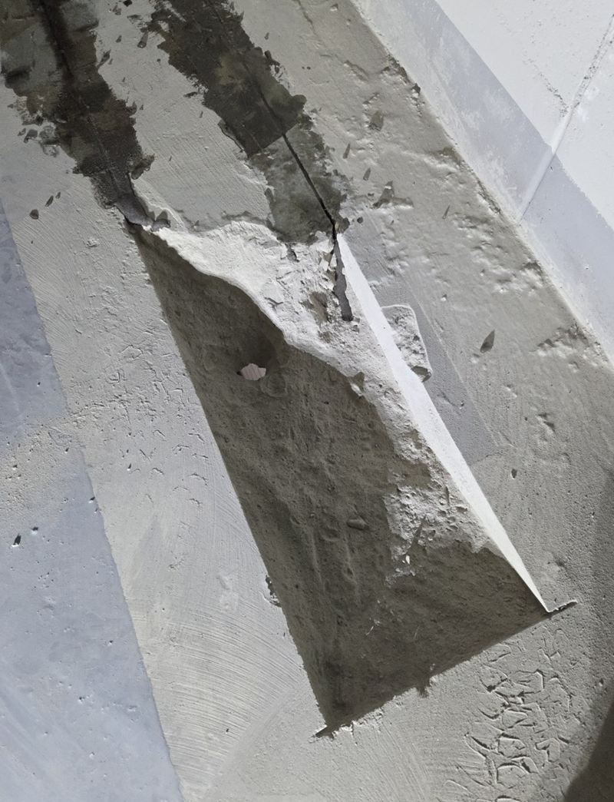
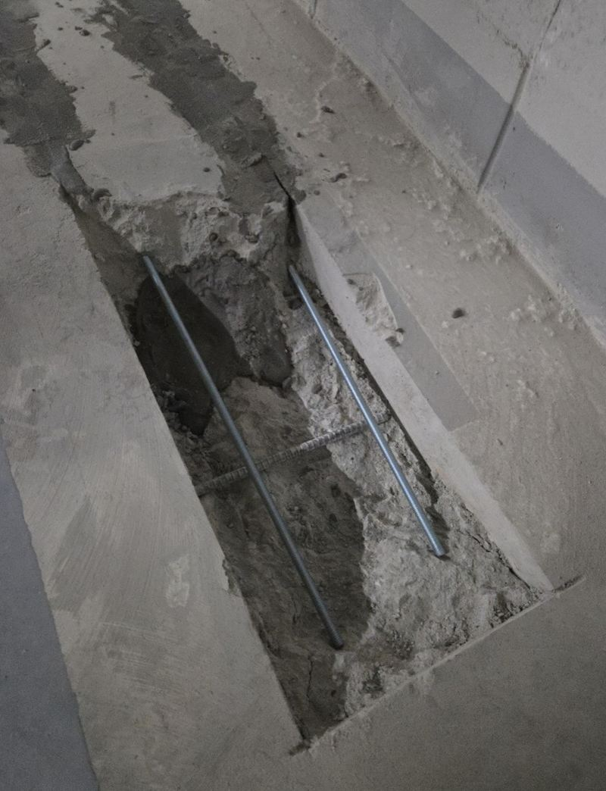
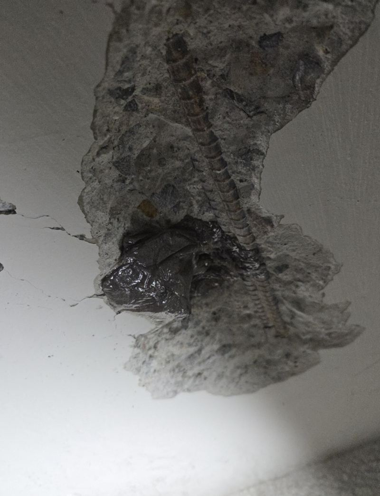
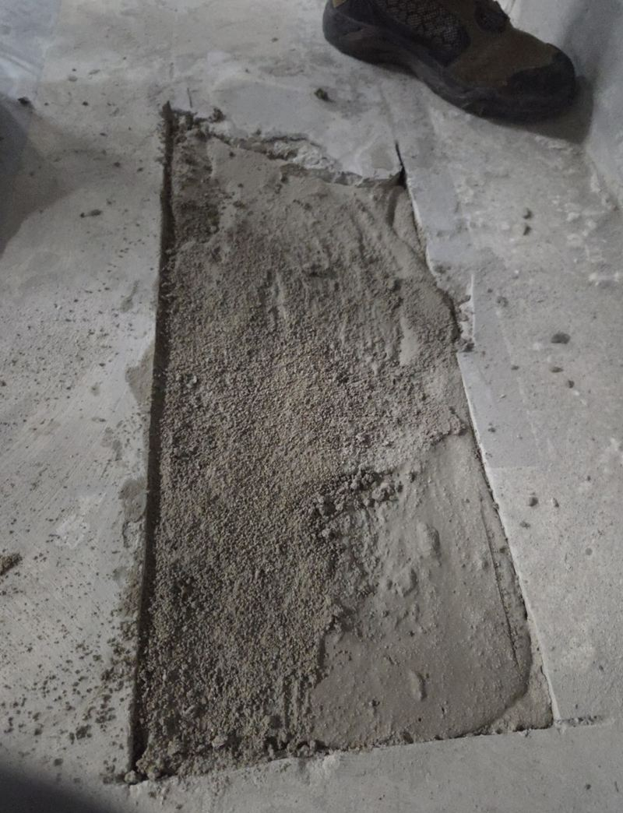

강서 지하주차장 콘크리트 벽면·천장 복원 방법

 복원 전복원 후
복원 전복원 후← 밀어서 전후 비교 →
"배수관 공사를 하다가 콘크리트 천장에 구멍이 나서 공사를 멈췄어요. 먼저 막아야 다음 공정을 이어 갈 수 있어요." 강서 마곡동 업무 빌딩 관리 쪽 연락이었어요. 지하주차장 콘크리트 일부가 떨어져 나가 속이 드러나 있었고, 주변에도 금이 가 있었어요. 손상 범위를 확인하고 고강도 시멘트로 속을 채운 뒤, 굳으면 몰탈을 여러 번 나눠 발라 주변 콘크리트와 높이를 맞췄어요.
| 현장 | 서울 강서구 마곡동 업무 빌딩 지하주차장 |
|---|---|
| 원인 | 배수관 공사 중 콘크리트 손상, 후속 공사 중단 |
| 한 일 | 손상·균열 범위 점검 → 고강도 시멘트 충전 → 양생 → 몰탈 나눠 도포·면 맞춤 → 표면 확인 → 관리 측과 확인 |
| 기간 | 양생 시간을 두고 이틀에 나눠 진행 |
깨진 콘크리트 메우는 순서
상태 점검
떨어져 나간 부분 주변에 금이 더 있는지, 어디까지 약해졌는지 먼저 봤어요. 겉만 메우면 약한 테두리가 나중에 같이 떨어져요.


고강도 시멘트 충전
비어 있는 속을 고강도 시멘트로 충분히 채웠어요. 재료의 묽기를 맞추는 게 중요해요. 너무 묽으면 흘러내리고, 되면 속까지 안 들어가요.


양생 후 몰탈 마감
시멘트가 굳은 뒤 몰탈을 여러 번 나눠 바르며 주변 콘크리트와 높이를 맞추고 평평하게 다듬었어요.


천장 보수가 더 까다로운 이유
바닥은 재료를 부으면 제자리에 머물지만, 천장과 벽은 중력 때문에 재료가 처지거나 떨어지려 해요. 그래서 한 번에 두껍게 바르지 않고 얇게 여러 번 나눠 올리고, 층마다 굳는 시간을 둬요. 재료 농도가 맞지 않거나 양생을 서두르면 몰탈이 들떠 떨어질 수 있어요. 이 현장도 시간을 두고 이틀에 나눠 진행한 이유예요.
| 바닥 보수 | 천장·벽 보수 | |
|---|---|---|
| 재료 | 부어서 채우기 쉬움 | 처짐을 막는 농도 조절 필요 |
| 바르는 법 | 한 번에 채울 수 있음 | 얇게 여러 번 나눠서 |
| 주의 | 단차·물 고임 | 들뜸·탈락 |
복원 후 확인한 것
- 높이주변 콘크리트와 턱 없이 이어지는지 봐요.
- 들뜸두드렸을 때 빈 소리가 나지 않는지 확인해요.
- 금보수 테두리에 새로 금이 가지 않았는지 봐요.
- 후속 공사배관 공사를 이어 갈 수 있는 상태인지 관리 측과 함께 확인했어요.
공사를 멈췄다면 먼저 막는 게 우선
배관이나 설비 공사 중 콘크리트가 깨지면 다음 공정을 이어 가기 어려워요. 깨진 테두리가 계속 부스러지고, 아래로 조각이 떨어질 위험도 있어요. 그래서 원래 공사를 마저 하기 전에 손상 부위부터 채워 안정시키는 게 순서예요.
이번 현장도 보수를 먼저 끝낸 뒤 관리 측과 상태를 함께 확인했고, 그 뒤에 멈췄던 배관 공사를 이어 갈 수 있었어요. 다른 업체가 공사 중이라도 손상 부위만 따로 맡기실 수 있어요.
지하주차장 콘크리트 보수 질문
다른 업체 공사 중 생긴 손상도 맡나요?
네, 이 현장처럼 다른 공사 중 생긴 손상을 먼저 막고 공사를 이어 가게 해요.
주차장을 막아야 하나요?
작업 구역과 양생 동안만 차를 다른 곳에 두게 안내해요.
철근이 드러났어요.
녹을 정리하고 덮어야 해요. 그대로 두면 녹이 번져 콘크리트가 더 떨어져요.
물이 새는 균열이에요.
누수 균열은 지수 작업이 먼저예요. 물이 어디서 오는지 봐야 해요.
보수 자리를 칠할 수 있나요?
몰탈이 완전히 마른 뒤 주변 색에 맞춰 도장할 수 있어요.
하루에 끝낼 수 없나요?
천장·벽은 양생 시간이 필요해 나눠서 하는 게 안전해요.
다른 바닥·콘크리트 보수 현장
손상 부위를 가까이, 주변까지 멀리서 한 장씩 찍어 보내 주세요.
전화 상담 010-4517-9872